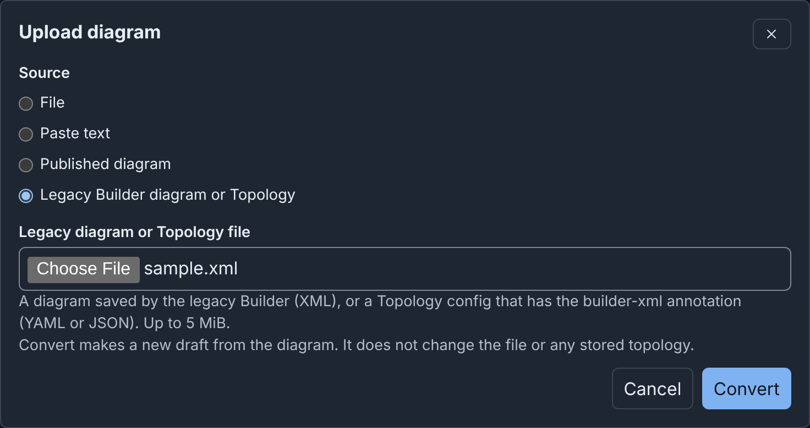

Legacy Builder¶
Earlier phēnix releases had a different graphical editor, also named Builder,
built on mxGraph. It opened at /builder in a new browser tab. This release
does not have the legacy Builder.
What changed¶
| Legacy Builder | Builder | |
|---|---|---|
| Where phēnix keeps a diagram | XML in the builder-xml annotation of the topology |
A draft on the phēnix server. Publish stores the diagram and names it in the builder-doc annotation |
| What writes the topology | Save to phēnix | Publish (see Publishing) |
| A line between two devices | A direct connection | A switch for each network. Converting adds the missing switch |
| Experiment variables | Placeholders such as $DEFAULT_MEMORY |
The values, in each node |
| Tag on the Configs page | builder legacy |
builder |
| REST routes | POST /builder/save, /api/v1/builder/topologies, /api/v1/experiments/builder |
Removed (see REST API) |
Topologies from the legacy Builder still run, because phēnix never read the diagram to run an experiment. Convert a diagram only to edit it as a diagram.
On the Configs page, the viewer and Edit show the annotation as
builder-xml: <SNIPPED>. phēnix keeps the diagram while that line does not
change. If you delete the line, phēnix deletes the diagram.
Converting a stored topology¶
Import converts the diagram of a stored topology that has builder-xml
and no builder-doc:
- In the phēnix navigation bar, click Builder.
- Click Import.
- Keep Stored config and the Source kind Topology.
- In Source name, choose the topology. Its name has the suffix "(legacy Builder diagram)".
- Click Import.
- If the dialog lists warnings (see Warnings), click Continue to editor.
The editor opens the converted draft. Change the draft as necessary. Then, to replace the legacy diagram:
- Click Publish.
- In Topology name, enter the name of the topology.
- Click Update topology.
- Click Update topology again.
The result shows the warning "This diagram replaced the legacy Builder diagram of topology NAME."
The draft uses the nodes of the topology. The old diagram gives only the position of each node, matched by hostname, and the notes and groups.
Nothing changes on the server until you publish. Publishing to the same
topology deletes builder-xml, writes builder-doc and keeps the other
annotations. The topology then has the tag builder.
On the Configs page, the builder legacy tag and the Import into
Builder button of the viewer open the same Import dialog, set to that
topology (see
Import, Upload and Download).
With the import options, a
copy, or a draft that combines the included topologies, publishes a new
topology. The legacy topology then keeps its builder-xml.
Only the draft imported from the topology itself can replace its legacy diagram. Other drafts cannot update the topology, such as a draft imported from an experiment of the topology, or an uploaded file. Publish them under a different name.
If the topology or its legacy diagram changes after the import, Publish refuses (see When the source config changed).
When the import cannot read the diagram, the draft has no layout from it
(see Warnings). Publishing then deletes builder-xml too, with
the warning "The server could not read the legacy Builder diagram of
topology NAME. The server removed it."
Converting a file¶
Upload converts a legacy diagram in a file:
- On the drafts page or in the editor toolbar, click Upload.
- Under Source, choose Legacy Builder diagram or Topology.
- In Legacy diagram or Topology file, choose the file.
- Click Convert.
- If the dialog lists warnings, click Continue to editor.
The editor opens a new draft. Its name is the file name without its last extension.

The file can be up to 5 MiB, and it must be one of these:
- An XML file from Save to Disk in the legacy Builder. Its root element
is
mxGraphModel(or a bareroot). - A Topology config, as YAML or JSON, with the
builder-xmlannotation, such as one downloaded from the Configs page.
The converter does not read draw.io files (mxfile), or compressed or
base64-encoded diagrams. The File and Paste text sources do not
convert a legacy diagram. They say "This is possibly a
legacy Builder diagram (XML). Select "Legacy Builder diagram or Topology" to
convert it."
Upload refuses other files, for example with "Could not convert the legacy diagram. This is not a legacy Builder diagram. A legacy diagram is mxGraph XML, or a Topology config with the builder-xml annotation." A Topology config without the annotation gives "Could not convert the legacy diagram. Topology NAME has no legacy Builder diagram (no builder-xml annotation). Select Import to make a diagram from it."
A diagram without its topology has only the node settings that the diagram holds. A draft converted from a file always publishes a new topology. It cannot update a stored topology, even one with the same name.
Converting a file needs configs get and create. phēnix keeps each
${NAME} in a Topology config file as written (see
Importing a config file).
If you close the dialog during the conversion, the conversion stops.
What is converted¶
| In the legacy diagram | In the Builder |
|---|---|
| A device | A device. Its settings come from the topology, or from the diagram when there is no topology |
| A router, firewall, desktop or server icon, in any color | The router, firewall, desktop or server icon. An external device gets external. Other icons become the icon of the device type |
| A switch | The switch of its network, named after the network |
| A VLAN ID on a switch or a line | The VLAN alias of the network, when it is a number from 1 to 4094. 0, auto or none give no alias |
| A line from a device to a switch | A connection |
| A line between two devices | A connection to a switch added for that network, between its devices |
| Text | A note |
| A rectangle or container around nodes | A group, with its text as the title |
A placeholder such as $DEFAULT_VCPU |
Only for a diagram without a topology: the variable of the diagram, else the legacy default (DEFAULT_MEMORY 2048, DEFAULT_VCPU 1, DEFAULT_VM_IMAGE ubuntu.qc2, DEFAULT_ROUTER_IMAGE vyos.qc2). The value stays text, such as vcpus: "1", as the legacy Builder wrote it |
| Positions | Doubled, on the 16-pixel grid, with each device centered where its icon was |
| The grid setting | Kept |
Positions double because a node card is about twice the size of the old
icon. Each device shows its type, such as Router or External.
For a topology, the conversion leaves out a node that is in the diagram but not in the topology. It puts a node of the topology that is not in the diagram below the diagram. Each gives a warning.
What is left out¶
- The name of the legacy switch. A switch has the name of its network.
- The variables of the diagram, after the conversion fills them in, and the
schemaanddevicekeys of each node. - Icon colors and artwork, and the
mobileicon. - Shapes, fills, strokes, fonts, rotation, shadows, dashes and arrows, and the HTML formatting of labels.
- Edge labels, waypoints and lines that are not links between a device and a network.
- Layers (merged into one), whether a cell was hidden, collapsed or locked, and the stacking order.
- Tooltips, links and inserted images.
- Shapes without text.
- Page settings, such as the page size, background and grid size.
- The parent of a group nested more than 32 deep.
Warnings¶
The dialog lists each warning before it makes the draft. A list of names shows at most 8 names, then the number of the others.
| Warning | What it means |
|---|---|
| "The Builder could not read the legacy diagram of topology NAME (…). The Builder did not use its layout. The Builder placed the nodes automatically." | The converter cannot read the builder-xml of the topology. The draft has the nodes of the topology, on a grid. Publishing deletes the old diagram |
| "1 node of the legacy diagram is not in the topology. The Builder did not import it: …" | The topology changed after the last save of its diagram. The draft uses the nodes of the topology |
| "1 node of the topology was not in the legacy diagram. The Builder placed it below the diagram: …" | The same, in the other direction |
| "The Builder added a switch for 1 network that had none in the legacy diagram: …" | The diagram joined two devices with a line, or did not draw the network |
| "The Builder did not import 1 link whose node has no interface on that network: NODE to NETWORK." | A line joins a device to a network that none of its interfaces uses |
| "VLAN ID VALUE of network NAME is not a number from 1 to 4094. The Builder did not import it." | The network has no VLAN alias |
| "Network NAME has more than one VLAN ID in the legacy diagram. The Builder kept the first, ID." | Its switches or lines gave other IDs |
| "VLAN ID ID occurs on networks A and B. The Builder kept it only for A." | Two networks cannot share an alias |
| "The legacy diagram had N layers. The Builder merged them into one layer." | All nodes are on one canvas |
| "1 item has settings that the Builder could not read. The Builder did not import it: …" | A node in the diagram has damaged settings |
| "1 node has interfaces that the Builder could not read. The Builder did not import these interfaces: …" | Only for a diagram without a topology. The node stays, without those interfaces |
| "The Builder renamed node "OLD" to "NEW": a hostname cannot hold spaces." | Spaces became hyphens. A network gets the same change, with "a network name cannot hold spaces" |
| "Used the legacy defaults for variables the diagram does not define: $DEFAULT_MEMORY = 2048, …" | Check the values in the Inspector |
| "1 placeholder has no value in the diagram. The Builder kept it as text: $NAME." | Replace the text in the Inspector before you publish |
| "The Builder did not import 1 line that was not a network link." or "The Builder did not import 1 shape that had no text." | See What is left out |
| "The Builder kept text and containers as notes and groups. The Builder did not convert their colors, fonts and other formatting." | Given once, when the diagram has text or containers |
| "The diagram has no nodes." | The draft is empty |
Keeping a copy of the old diagram¶
Before you publish, download the topology from the Configs page. The file holds the XML, and Upload can convert it again. To open the old editor, use phēnix 1.0.0 or an earlier release.